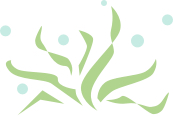
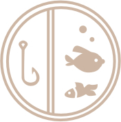
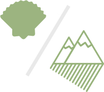

A Bit of
History
A Bit of History
Homeopathy was first created as a German system of healing using plants, animals and minerals to re-tune and strengthen one's innate healing power – what we call a vital force.

With a strengthened Vital Force, a client can not only experience the improvement of specific symptoms, but also become generally less susceptible to disease.

Homeopathy doesn’t focus on quick fixes. We use over 5,000 remedies, and there is only one that matches the client best.
For this reason, homeopaths need up to 2 hours in an initial consultation, to truly understand what is unique about the client. We see homeopathy as a process, and do not simply pound symptoms down by force, like many pharmaceuticals do.
Instead, we use symptoms like the engine warning lights of a car: they inform us on the inner state of disease. Sessions can feel similar to therapy, and are a part of healing.

About the Homeopath
David Kim (he/they) is a homeopath who locates his roots in the Pacific, Okinawa, Korea, and Scotland. Love, belief and chimu (the heart) ground his practice. He is drawn – by genealogy and by training – to the intersections of Indigenous language revitalization, land, history and medicine.
David is completing training at the Northwestern Academy of Homeopathy.